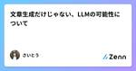
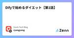
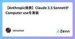
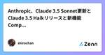
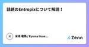
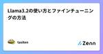
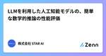
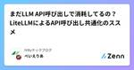
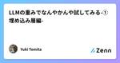
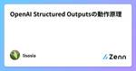

Zennの「LLM」のフィード
フィード

文章生成だけじゃない、LLMの可能性について
Zennの「LLM」のフィード
気合い系エンジニア齊藤です。 LT会の発表に伴い、改めてLLM周りの面白さを再発見できたので、面白ポイントの共有させてください。 LLMの開発といえば、約8割がchatbot開発、残り2割がその他という現状（体感）ですが、1つの可能性として近い将来こんな形でLLMが使用されると面白いよねということで、本記事を執筆します。 非エンジニアの方を含めてLLMの可能性がわかるように言及できればと思います。 本記事で特に伝えたい事項は以下2項目です。 LLMの推測能力で最適な行動をとる 最適行動からソフトウェアを操作する 以下発表時に使用した資料になるので、もしご興味ある方は見てみてください。...
9時間前
Technology Radar vol.31 の個人用サマリ
Zennの「LLM」のフィード
はじめに 本日 2024/10/24 Technology Radar の vol.31 が公開されました。 全体的に軽く知っておこうと思い、ダウンロードした PDF を、最近公開された Claude の Sonnet 3.5 New を使いサマライズしました。 見出しだけだとそれがどのようなものなのかが分かりづらかったので、キャッチコピーを ChatGPT の canvas 機能を使ってつけ加えています。 免責事項 ! 本ポストの内容は LLM を使いラフにサマライズさせた個人用のメモの延長のようなもののため、正確な内容を確認したい場合は元のポストの内容を参照するようお願いしま...
13時間前

Difyで始めるダイエット【第1話】
Zennの「LLM」のフィード
はじめに こんにちは！ 突然ですがみなさん、自炊、してますか？ 毎日の献立を考えることは多くの家庭で頭を悩ませる問題です。私の家では、最近は野菜、きのこ類、豆腐を切って全てお鍋に突っ込んで、気分で味付けしたものを自炊と称していただいています。 でも、やっぱり毎日これだと飽きる！焼き魚が食べたい！(個人的な意見)となることが多いのが我が家の現状です。 今回の記事ではDifyとOpenAI APIを活用することで、時間を節約しながら健康的でバラエティに富んだメニューを生成し、そんでもって減量もできてしまう魔法(誇大広告)のツールを作るのが目標です。 使用するもの Dify: ノーコ...
18時間前

【Anthropic発表】Claude 3.5 SonnetがComputer useを実装
Zennの「LLM」のフィード
本記事は、Anthropicが2024年10月23日に公開したDeveloping a computer use modelの内容を日本語でまとめたものです。 Anthropicは2024年10月23日、同社の大規模言語モデルClaude 3.5 Sonnetに、人間のようにコンピュータを直接操作する機能を追加したことを発表しました。この新機能は現在パブリックベータ版として提供されており、適切なソフトウェア環境下で利用可能です。 新機能の概要と特徴 この新機能により、Claudeは以下の操作が可能になりました： マウスカーソルの移動 画面上の位置を認識してのクリック操作 仮想キー...
2日前
Claude Computer use デモ4選(随時追加)
Zennの「LLM」のフィード
はじめに 自社開発企業のAI部門でインターンしている25卒のエンジニアです。 2024/10/23にClaudeからComputer use(bata)が発表されました。 ローカルでのセットアップ方法と、デモをしていきます。 Computer use(bata)とは？ また、パブリック ベータ版では画期的な新機能である「コンピューターの使用」も導入しています。APIで本日から利用可能になり、開発者は Claude に、画面を見たり、カーソルを動かしたり、ボタンをクリックしたり、テキストを入力したりといった、人間と同じようにコンピューターを使用するよう指示できます。 https...
2日前

Anthropic、Claude 3.5 Sonnet更新とClaude 3.5 Haikリリースと新機能Computer useを発表
Zennの「LLM」のフィード
本記事は、Anthropic社が2024年10月23日に公式サイトで発表した内容をまとめたものです。 参考：Anthropic社の発表内容 Executive Summary 📈 発表の要点 Claude 3.5 Sonnetの性能が大幅に向上（SWEbenchで33.4%→49.0%） 新モデル「Claude 3.5 Haiku」の導入（SWEbenchで40.6%を達成） 革新的な「computer use」機能のパブリックベータ版をリリース 💡 提供について すべての更新は従来のモデルと同じ価格で提供 Computer use機能は主要クラウドプラットフォームで利用可能...
2日前
bolt.newのメッセージングプロトコルを調べた
Zennの「LLM」のフィード
https://bolt.new/ bolt.newはClaude 3.5 SonnetをVercel AI SDKで叩いて結果をWebContainersにデプロイしてプレビューする。 WebContainers以降はstaticblitzのサーバーに接続してiframeを開いてWasmをダウンロードしてきていろいろロードしているがブラックボックスなのであまり手の入れどころがない。 しかし、コード生成部分はClaudeとの入出力なので真似すれば「生成→dockerで実行する」自作のコード生成ツールが作れるのではないかと思い調べた。 処理を追う場合はブラウザのチャット入力を受け付ける P...
2日前

話題のEntropixについて解説！
Zennの「LLM」のフィード
はじめに 株式会社PrefabでCTOをしているYonemotoです。Entropixのデコーディング方式を動的に変えるという斬新なアイデアがとても興味深かったので記事にしました。確かにそうすればLLMのトークン生成の際に（ざっくりとした表現ですが）自信の有無を出力にうまく反映させることができるだろうと思い、その手があったか！と感動しました。 Entropixの概要 事前学習済みLlamaの推論時において、次のtoken候補それぞれの確率からエントロピーとバレントロピーを定義し、その値によってサンプリング方式を動的に変えることによって精度を向上させたというものです。 背景: ...
3日前
0から作るLLMーLlama 1
1
Zennの「LLM」のフィード
本記事の対象読者： LLM（大規模言語モデル）の複雑な構造や階層を理解しているが、それをどのように組み合わせるかが分からない人 LlaMaモデルに関するすべてのオペレータとアーキテクチャ（RMSNorm、ROPE、SwiGLUの実装を含む）を一行ずつ分解します。 本記事ではhuggingfaceのライブラリを使用しておらず、すべてpytorchで実装しています。また、事前学習済みモデルも使用していません。 スタート地点は『源氏物語』の原文であり、ゴール地点はあなた自身がトレーニングした大規模モデルです。 pytorchを準備してください。GPUがなくても大丈夫です。重要なのはLLM...
3日前
GenEOL:複数の文章変換と要約でRAGの性能を向上 2
Zennの「LLM」のフィード
導入 こんにちは、株式会社ナレッジセンスの須藤英寿です。普段はエンジニアとして、LLMを使用したチャットのサービスを提供しており、とりわけRAGシステムの改善は日々の課題になっています。 この記事では、学習不要な方法で文章のEmbedding性能を向上させる手法 GenEOL について紹介します。 https://arxiv.org/pdf/2410.14635 サマリー GenEOLは、文章をLLMを使用して複数の文章に変換し、ベクトルデータを計算する手法となっています。LLMとEmbeddingを組み合わせたベクトル化の手法はこれまでにも提案されて来ましたが、構造の変換と要...
3日前

Llama3.2の使い方とファインチューニングの方法
Zennの「LLM」のフィード
内容 2024年9月25日にMetaから新たなLlama3.2が発表された．Llama3.2シリーズにはテキストモデルである1B・3B，画像を理解し指示に応答できる11B・90Bのビジョンモデルが含まれている．これらのモデルは自然言語処理や画像認識タスクに対応しており，高度な応答生成や画像理解の能力を備えている． 今回は，特にビジョンモデルである「Llama-3.2-11B-Vision-Instruct」について，その使い方とファインチューニングの手順を詳しく解説する． 参考 https://zenn.dev/protoout/articles/73-hugging-face...
3日前
20241010 FULLY CONECTED
Zennの「LLM」のフィード
20241010 FULLY CONECTED 生成AIのイベント@日本橋三越の三越劇場 Wifiは？電源は？は。無いよ 私物のPCが良かった。iPhoneの充電が出来るから（ケーブル WBの説明 Gemma ファインチューニングオンGoogleクラウド Gemma2 for japan 生成AIと創薬 アステラス製薬 薬を探すステージ ターゲットの特定 DNA mRNA タンパクシツ 漏れきゅらインテクレーション 大規模プロテインランゲージモデル pLMs モデルのトレーニング 一次元、二次元、三次元の化学式を生成 トヨタ、うーぶんしてぃ ML内製開発への挑戦 ０ １ 課題１ 実験管理...
4日前

LLMを利用した人工知能モデルの、簡単な数学的推論の性能評価
Zennの「LLM」のフィード
■ はじめに お疲れ様です。株式会社STAR AI社員のミキです。 日々のエンジニアライフを豊かにするために調べたことをこちらに記載します。 ■ 目的と動機 ちょっと前(2024/9/12)にChatGPTの新バージョンであるo1-previewが発表された。評判がいいらしい。 普段私は金を払ってChatGPTとClaudeを利用している。 特に数学やプログラミングに関する疑問が湧いた時、とりあえず投げてみる場所としてClaude 3.5sonnetをまあまあ使っている。 Claude 3.5sonnetは今まで、ChatGPT 4oよりはまともな回答が返ってきていた。 今回Ch...
4日前

まだLLM API呼び出しで消耗してるの？LiteLLMによるAPI呼び出し共通化のススメ 10
Zennの「LLM」のフィード
こんにちはべいえりあです。いきなり煽りタイトルで申し訳ないのですが、今回はLiteLLMについて書いてみようと思います。 LiteLLMとは？ LiteLLMは様々なLLM APIをOpenAIフォーマットで呼び出せるサービスです。 https://www.litellm.ai/ LLM APIを共通のフォーマットで呼び出せるサービスとしては他にもLangChainなどもあると思うのですが、APIの呼び出し共通化が目的だとLangChainをインストールすると不要な機能／ライブラリも併せて大量にインストールされるので、必要最小限の機能があれば良いのであればLiteLLMがオススメです...
4日前
ローカルLLM実装（GoogleColabolatory編）
Zennの「LLM」のフィード
はじめに はじめまして。データアナリティクスラボ株式会社 データソリューション事業部の平野です。 私は社内のラボチームに所属しており、生成AIに関する研究・勉強に取り組んでいます。 目的 昨今自分のローカルなPCやサーバー上で動かせるオープンソースのLLM（Large Language Model：大規模言語モデル）として様々なLLMがリリースされており、現状LLMで最高峰の性能であるChatGPTやGeminiに匹敵するほど性能が高いオープンソースのLLMも徐々に出てきています。 それに伴って、今後個人あるいは企業でオープンソースのLLMを利用したLLMシステム構築の需要が高ま...
4日前
【LLM】LoRA まとめ
Zennの「LLM」のフィード
原理 事前にトレーニングされたモデルの重みをすべて凍結して、追加の重みの変更をトレーニングして行列に保存する。 また高ランクの行列を低ランクの行列の組み合わせに分解する機構を活用している。 構成 W0 ☛ 事前トレーニングされた重み行列が d * d の次元を持つ。(トレーニング中はフリーズ) 重み変化行列 ∆W ☛低ランク行列AとBとしてトレーニングする。 演算子としてのイコール ∆W = BA 二つの低ランク行列にすることで冗長なパラメータを削減できる。 (300,300) ☛ 90000のパラメータ数 (300,2),(2,300) ☛1200のパラメータ数 上記の2...
4日前

LLMの重みでなんやかんや試してみる-①埋め込み層編-
Zennの「LLM」のフィード
このシリーズの大目的 このシリーズは、LLM(主にDecoder-Onlyで重みが公開されているもの)の内部をいじって遊んでみることでTransformerの新たな一面を見つけることができたらいいなという、ふわっとしたゴールに向かって進んでいきます。 今回のターゲット この記事では、まずモデルへの入力が最初に出会う「埋め込み層」を触っていこうと思います。 埋め込み層(Embedding Layer)には、Tokenizerによって文字列がtoken idの列に変換されたものが入力として入ってきます。 # こんなイメージ input_ids = [0, 5, 9, 43, 10] ...
4日前
GraphAI 0.5.9
Zennの「LLM」のフィード
GraphAI 0.5.9がリリースされました。 主な変更点は以下。 深いnestedのnamed inputsサポート inputs: {a: {b: {c: [":data"], d: ":data2"}, e: ":data3" } } inputsでfunctionを追加 inputs: { length: ":arrayData.length()", flatArray: ":arrayData.flat()" } サポートするのは array: length() flat() object: keys() values() string: jsonP...
4日前
Ollamaで体験する国産LLM入門 174
Zennの「LLM」のフィード
近年、AIの中でも大規模言語モデル（LLM）の研究開発が特に活発に進められています。日本でも日本語に特化した国産LLMの開発競争が熾烈を極めています。さらには、小規模でも高性能なLLMが登場し、GPUのない手元のPCでも簡単にLLMを動かせる時代が到来しました。 本書では、まずLLMを動かすための基本的な知識をわかりやすく解説します。LLMについて学ぶには膨大な知識が必要と思われがちですが、動かす（推論する）だけであれば、いくつかの重要なポイントを押さえるだけで十分です。 その上で、OllamaというLLM推論フレームワークを活用し、実際にいくつかの国産LLMを動かしてみます。Ollamaはローカルで動かせるオープンソースソフトウェア（OSS）でありながら、Google Cloud等のクラウドプロバイダーとの連携を強めており、今後はLLM推論フレームワークとしてのデファクトスタンダードになることが期待されています。 本書を通じて、これまでLLMに縁のなかったソフトウェアエンジニアの方々が、LLMの奥深い世界に触れるきっかけとなれば幸いです。
5日前

OpenAI Structured Outputsの動作原理
Zennの「LLM」のフィード
Structured Outputsとは与えたJSON Schemaに従ってGPTに出力させる機能。 動作原理について本家ブログに解説があった。Next tokenサンプル時に、与えられたJSON Schemaに従う範囲でサンプルすることで実現している。この方法をconstrained samplingと呼ぶ。 Introducing Structured Outputs in the API (August 6, 2024) Our approach is based on a technique known as constrained sampling or constraine...
6日前